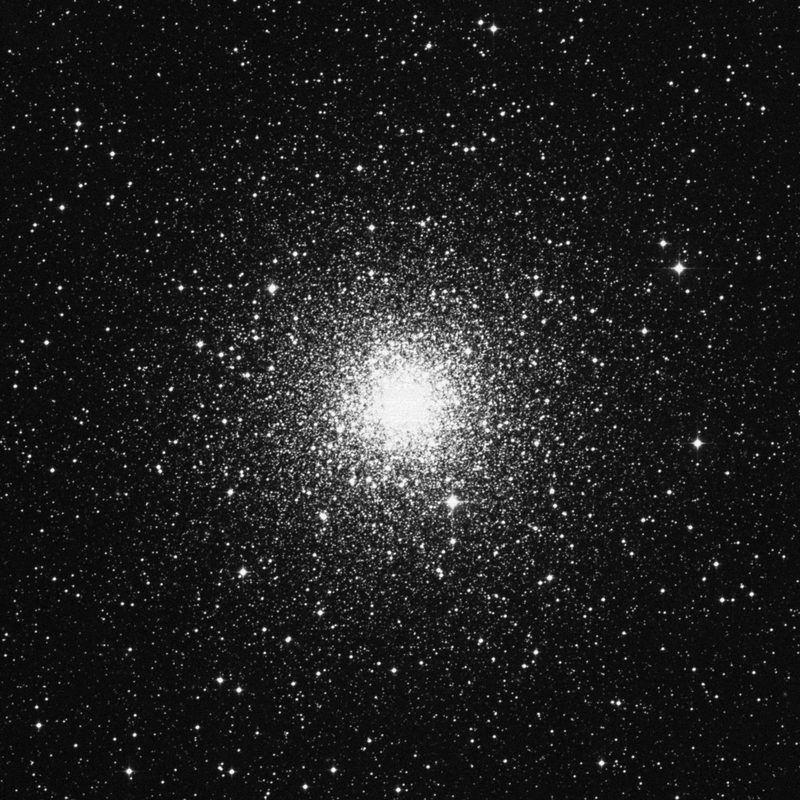
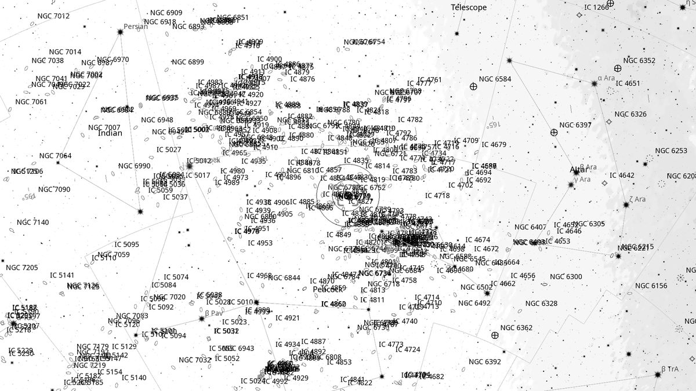
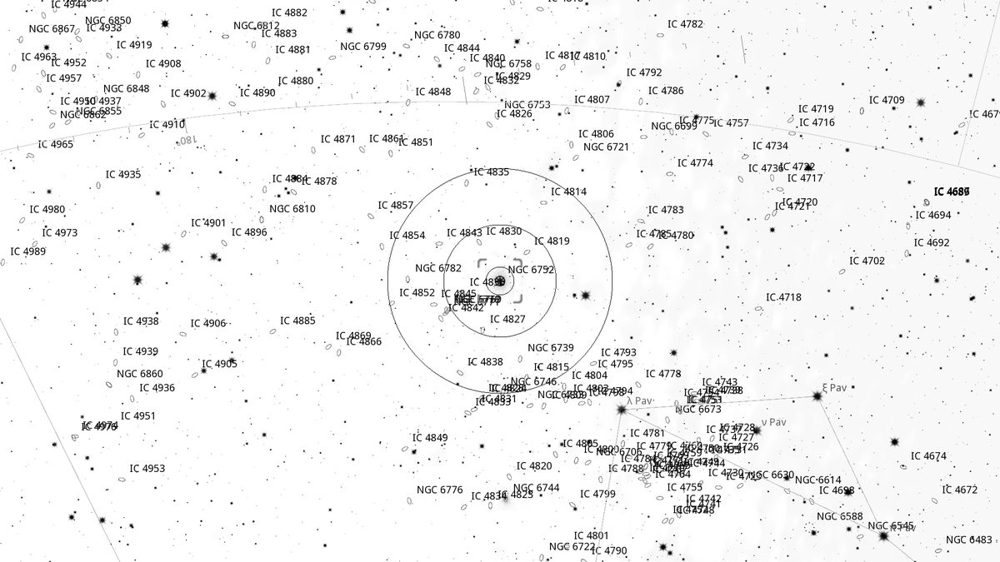
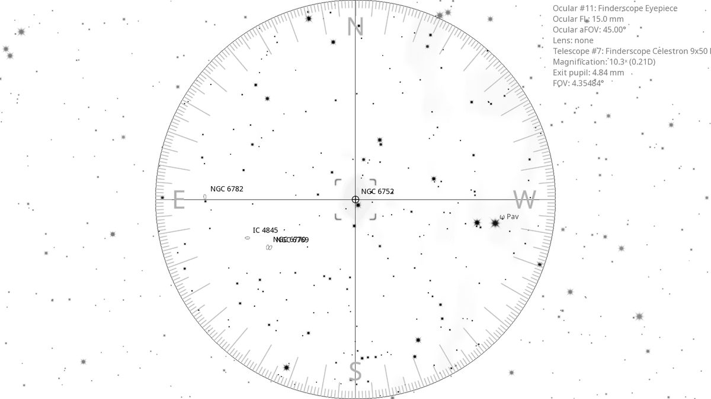
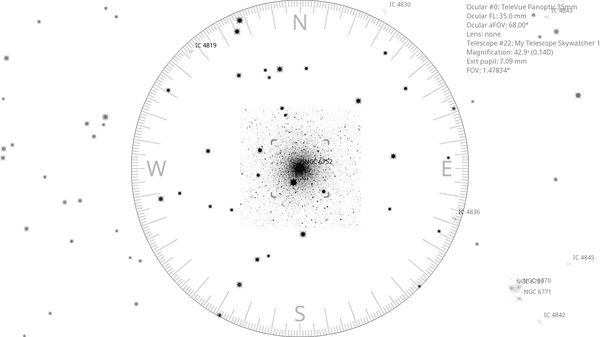

NGC 6752 (GC)
| R.A. | Dec. | Size | Mag | SB | Cnt.St | Type | Distance | Chart |
|---|---|---|---|---|---|---|---|---|
| 19h 10m 53.0s | -59° 58′ 52.0″ | 20.4′ | 6.3 | 12.6 | VI | GC | -- | -- |

Background
NGC 6752 is the fourth-brightest globular cluster in the sky (after ω Cen, 47 Tuc and M22), magnitude 5.4, 13,000 light-years away in Pavo. Notable for chains of bright stars streaking out from the core in a starfish pattern.
My Observing Notes
25-cm (Meade 10-inch LX200, The Coffee Grinder): Find by drawing a line from Hadar through α Trianguli Australis to α Pavonis, then forming a triangle with β and δ Pav. Position δ Pav just outside the outer Telrad ring ( 4°) and the cluster centres in the finder. Bright and well resolved at this aperture; chains of bright stars streaking out from the core form a starfish pattern. One of my favourites of the night.(Friday, June 2025)
44-cm (Club 17.5-inch f/5): Recent visit with the Coffee Grinder, but the extra aperture made NGC 6752 a worthy revisit. The distinctive shape — loops and chains of stars extending out from the well-resolved core — make it one of my favourites.(Saturday, September 2025)
References
Charts



